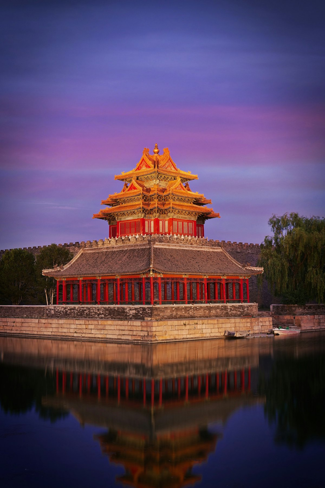
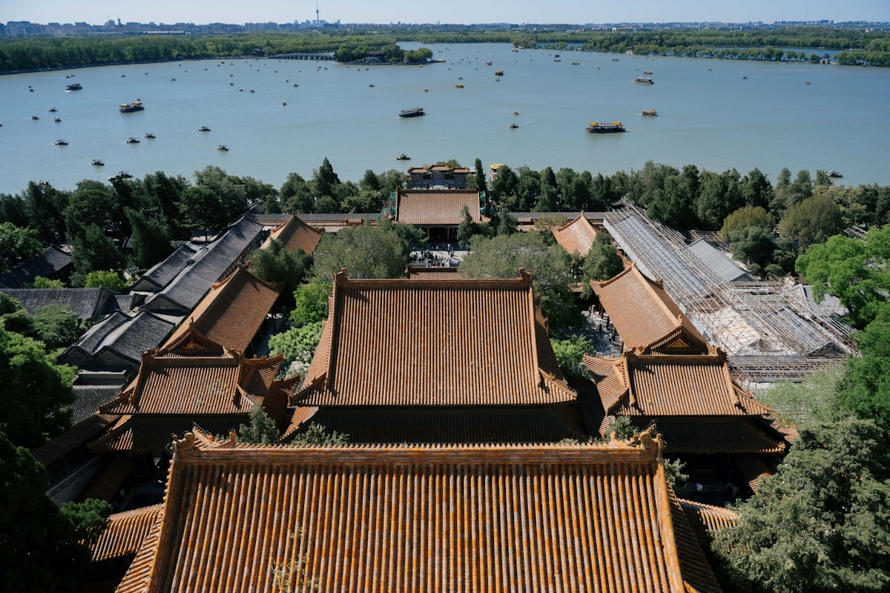
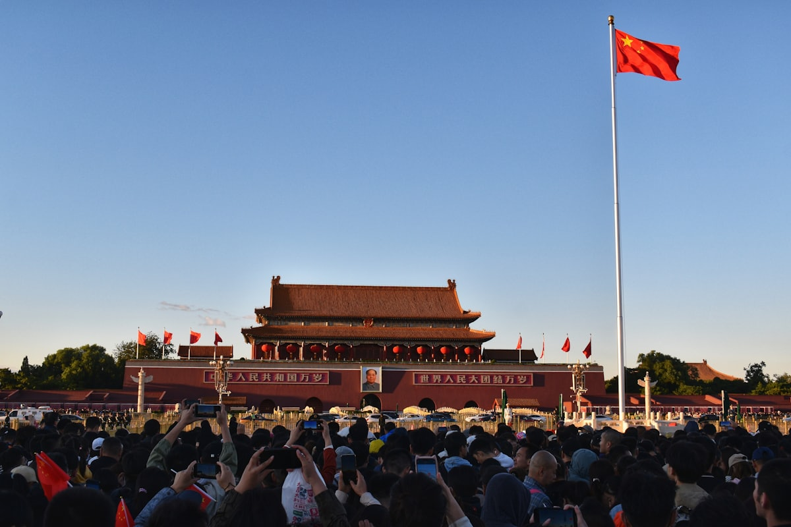
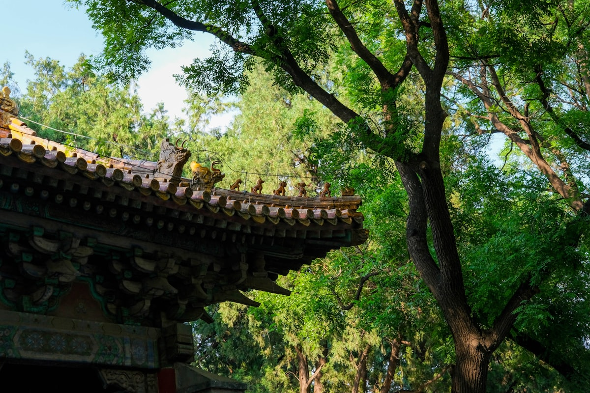
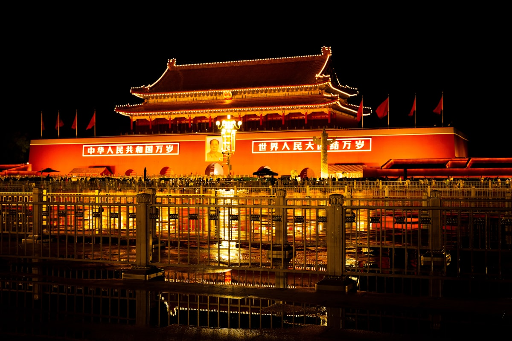
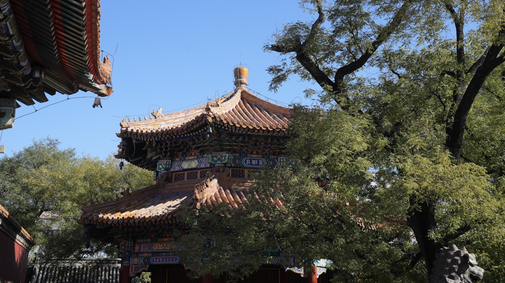

| 事项 | 结论 |
|---|---|
| 事项 | 结论 |
| 推荐方案 | 10 天 9 晚（含 1–2 个近郊日） |
| 返程约束 | 第 10 天下午/晚间返程 |
| 行程链 | 故宫 → 中轴线 → 长城 → 天坛 → 颐和园 → 胡同 → 近郊 |
| 预算（人均） | 经济 3500–4500 ／ 标准 5500–7000 ／ 舒适 9000–12000 |
| 三件提前事 | ① 故宫/国博提前 7 天抢票 ② 长城选工作日避开人潮 ③ 酒店提前 2 周订 |
| 季节提醒 | 春秋最佳；暑期人多闷热，冬季干冷但游客少 |
| 交通卡 | 地铁全线支持手机扫码，无需办卡 |
以下为 10 天 9 晚的推荐节奏。每日主景点 ≤2 个，留足步行与吃饭时间。
| 日期 | 行程 | 过夜地 | 主题 |
|---|---|---|---|
| D1 抵京 | 入住王府井/前门，傍晚前门大街 + 正阳门夜景 | 前门一带 | 抵达 + 预热 |
| D2 | 天安门广场 → 故宫（全天）→ 景山公园看紫禁城全景 | 前门一带 | 中轴线经典 |
| D3 | 八达岭长城（或慕田峪）→ 夜宿昌平/回城 | 市区 | 长城雄关 |
| D4 | 天坛公园 → 前门老字号 → 什刹海 + 恭王府 | 什刹海一带 | 皇家坛庙 |
| D5 | 颐和园（全天）→ 傍晚圆明园遗址（可选） | 海淀一带 | 皇家园林 |
| D6 | 国家博物馆（半天）→ 王府井 → 长安街夜景 | 市区 | 国家宝藏 |
| D7 | 北海公园 → 南锣鼓巷 → 鼓楼 + 烟袋斜街 | 什刹海一带 | 胡同烟火 |
| D8 | 雍和宫 → 孔庙/国子监 → 五道营胡同 | 北二环 | 祈福文脉 |
| D9 | 香山/植物园 或 798 艺术区（二选一） | 市区 | 近郊放松 |
| D10 返程 | 上午自由活动/采购伴手礼，下午返程 | — | 收尾 |
以下为 10 天全程的逐小时执行时间线，可当作「当天打开照着走」的清单。标注 ※ 的可选项视体力与天气取舍。
| 时间 | 事项 |
|---|---|
| 14:00–17:00 | 抵达北京（高铁到北京南/北京站，飞机到大兴/首都），地铁进城入住 |
| 17:30–18:30 | 办理入住（推荐前门/王府井，近地铁与景点） |
| 19:00–21:00 | 前门大街散步：正阳门城楼、大栅栏老字号（吴裕泰/内联升），晚餐北京烤鸭或涮肉 |
| 21:00 | 回酒店休息，调整状态 |
| 时间 | 事项 |
|---|---|
| 08:00–09:00 | 天安门广场（免预约需安检）：人民英雄纪念碑、国家博物馆外观 |
| 09:00–15:00 | 故宫博物院（旺季 60 元，需提前 7 天预约）：午门进、神武门出，走中轴 + 东西六宫，租讲解器 |
| 15:00–16:30 | 景山公园（2 元）：登万春亭俯瞰紫禁城全景，必打卡 |
| 17:00–18:30 | 晚餐：故宫附近或回前门，尝铜锅涮肉 |
| 19:00 | 回酒店休息 |
| 时间 | 事项 |
|---|---|
| 07:30 | 早餐后出发（市区到八达岭约 1.5h；到慕田峪约 2h） |
| 09:30–15:00 | 八达岭长城（旺季 40 元，缆车另计）或 慕田峪长城（45 元）：登城 + 敌楼，北八楼/西线最美 |
| 12:00 | 长城上或景区内简餐 |
| 15:00–17:00 | 下山，可顺访明十三陵（长陵 45 元，可选）或直接返城 |
| 18:30 | 回市区晚餐，早点休息恢复体力 |
| 时间 | 事项 |
|---|---|
| 08:30–12:00 | 天坛公园（联票旺季 34 元）：祈年殿、回音壁、圜丘，感受皇家祭天 |
| 12:00–13:00 | 天坛北门老字号：都一处烧麦 / 天兴居炒肝 |
| 13:30–16:00 | 什刹海（免费）：后海骑行/游船，银锭桥看西山 |
| 16:00–17:30 | 恭王府（旺季 40 元）：和珅府邸，福字碑 |
| 18:00 | 晚餐：什刹海周边，或回前门 |
| 时间 | 事项 |
|---|---|
| 08:30–15:00 | 颐和园（旺季联票 60 元）：万寿山、昆明湖、长廊、十七孔桥，半天起 |
| 12:00 | 园内或北宫门外午餐 |
| 15:30–18:00 | 圆明园（门票 10 元）：西洋楼遗址、大水法，感受历史 |
| 18:30 | 晚餐：海淀商圈 |
| 时间 | 事项 |
|---|---|
| 09:00–13:00 | 国家博物馆（免费需预约）：古代中国基本陈列 + 镇馆之宝（后母戊鼎、四羊方尊等） |
| 13:00–14:00 | 国博内简餐或王府井小吃 |
| 14:30–17:00 | 王府井步行街 + 东安市场，可逛可吃 |
| 18:30–20:00 | 长安街夜景：国家大剧院、中轴线灯光 |
| 20:30 | 回酒店 |
| 时间 | 事项 |
|---|---|
| 08:30–11:00 | 北海公园（门票 10 元）：白塔、九龙壁，琼华岛远眺中轴线 |
| 11:30–13:00 | 南锣鼓巷（免费）：尝小吃（炸酱面/糖葫芦/豆汁焦圈） |
| 13:30–16:00 | 鼓楼 + 烟袋斜街 + 什刹海西岸：骑行胡同，鼓楼大街看日落 |
| 16:30–18:00 | ※ 后海酒吧街 或 剧场看相声（可选） |
| 18:30 | 晚餐：胡同里吃正宗炸酱面/铜锅涮肉 |
| 时间 | 事项 |
|---|---|
| 08:30–11:00 | 雍和宫（25 元）：京城最大藏传佛教寺院，万福阁、法轮殿 |
| 11:30–13:00 | 孔庙 + 国子监（联票 30 元）：进士题名碑、辟雍 |
| 13:00–14:00 | 午餐：国子监街/五道营胡同小店 |
| 14:30–17:00 | 五道营胡同（免费）：咖啡馆、小店、文艺街拍 |
| 17:30 | 晚餐：北新桥/簋街（麻小、烤串） |
| 时间 | 事项 |
|---|---|
| 08:30 | 出发（香山在西北五环外，约 1h 车程） |
| 09:30–13:00 | 香山公园（10 元，红叶季 40 元）或 北京植物园（5 元）：登山/看花 |
| 13:00–14:00 | 山脚下简餐 |
| 14:30–17:30 | 回城后 ※ 798 艺术区（免费）：画廊、展览、工业遗址 |
| 18:30 | 晚餐：望京/798 周边 |
| 时间 | 事项 |
|---|---|
| 08:30–11:30 | 自由活动：稻香村买点心、全聚德真空烤鸭、故宫文创 |
| 11:30–12:30 | 午餐 |
| 13:00–16:00 | 退房，赴高铁站/机场，返程 |
必去（必去）/ 顺路（顺路）/ 可跳过（可跳过）。

必去
顺路
顺路
顺路
可跳过图片为 Unsplash 主题图（故宫、长城、天坛、颐和园均为北京实景），用于页面配图。更多免费景点：景山公园、北海公园、南锣鼓巷、798 艺术区。
点击左侧节点可在地图上定位；点击地图 marker 会高亮对应节点。坐标为 WGS-84 转 GCJ-02 纠偏后标注。
以下为单人、不含购物的估算；门票为旺季参考价，以现场为准。交通按高铁往返计（从华北周边城市出发约 1000–1500 元），不同出发地浮动较大。
| 项目 | 经济（3500–4500） | 标准（5500–7000） | 舒适（9000–12000） |
|---|---|---|---|
| 往返交通 | 高铁约 1000–1500 | 高铁/飞机约 1500–2500 | 飞机+接送约 3000–4000 |
| 住宿（9 晚） | 青旅/快捷 800–1200 | 连锁酒店 1800–2700 | 王府井星级 4500–6000 |
| 门票 | 基础景点约 250 | 含长城缆车等约 450 | 全含 + 演出约 800 |
| 餐饮（10 天） | 600–800 | 1200–1600（含烤鸭） | 2000–2800（米其林/老字号） |
| 市内交通 | 地铁 100–150 | 地铁+打车 250–350 | 打车/包车 500–800 |
带娃推荐：中国科技馆（儿童免费）、自然博物馆、北京动物园（海洋馆）、环球影城（需额外 1 天）替换部分人文行程。
12–2 月游客少、故宫拍照干净，但户外体感冷；长城易有雪，防滑鞋必备。酒店价格比旺季低 30–50%。
| 方式 | 时长 | 参考价 | 备注 |
|---|---|---|---|
| 高铁（推荐） | 视出发地 1–6h | 二等座 100–1000 元 | 北京南/北京西/北京站，班次密集 |
| 飞机 | 视出发地 1–3h | 300–2000 元 | 大兴/首都两场，地铁机场线进城 |
| 自驾 | 视出发地 | 高速+停车费 | 市内停车贵，长城建议公共交通 |
| 区域 | 价格/晚 | 优点 | 短板 |
|---|---|---|---|
| 前门/王府井 | 快捷 300–500 / 星级 700–1500 | 近天安门、故宫、地铁 1/2 号线 | 游客多，旺季贵 |
| 什刹海/鼓楼 | 民宿 400–700 | 胡同烟火气，离南锣近 | 部分老房隔音一般 |
| 海淀（颐和园） | 快捷 250–400 | 近北大清华、颐和园，便宜 | 离市中心远 |
| 望京/酒仙桥 | 快捷 300–450 | 近 798，性价比高 | 离核心景点远 |